The conformal group is isomorphic to SO(d+1,1) in euclidean metric, see here for details, the embedding space is:
Rd+1,1⊃Rd
By looking at the conformal transformations on the embedding space, which should look like Lorentz transformation, and then only considering the relevant subspace, we should be able to reduce the complexity of studying the conformal representations.
Coordinates in the embedding space are denoted by:
PA∈Rd+1,1xμ∈Rd
Define lightcone coordinates:
PA=PlcA≡(P+,P−,Pμ)P±≡Pd+2±Pd+1ds2=dPμdPμ−dP+dP−
The associated metric is:
ηlc∼0−21−210001⋱1
So that:
P1⋅P2=P1μP2μ−21(P1+P2−+P1−P2+)
Now, SO(d+1,1) acts trivially on PA:
PA↦P′A=RBAPB
we want to find the transformation rules for x from this relation. In order to do so, we need to identify the correct relevant subspace of the embedding space. This subspace is d-dimensional and needs to be invariant under rotations (otherwise these transformations would potentially send a point of the subspace into another point outside of it).

Consider the null hyperbole:
I≡{PA∈Rd+1,1:P2=0}
This subspace is clearly left invariant by rotations. Then, consider the rays on the hyperbole (projective space):
λPAλ=0∧PA∈I
Call this classλ, then we suppose we can identify our target subspace Rd with basically any “section” in the hyperbole (see Quotient set):
Rd↔I/λ
We choose a representative for the class by fixing the first element and last d elements; the remaining element is fixed by lying on the hyperbole:
PpsA=(1,x2,xμ)
The set of points in this form is called Poincaré section (red in the image).
Under rotations, a point in the Poincaré section might end up outside of it, but then we can rescale (thanks to focusing on equivalence classes) to return inside the section.
PpsA↦R∈SO(d+1,1)P′A=RABPpsB
Rescaling:
Pps′A=P′+P′A=(1,x′2,x′μ)
Now we claim that:
xμ↦x′μ
is a conformal transformation.
Extension to fields
Scalars
Denote fields lying in the embedding space as Φ and fields lying in the original space as ϕ. We require two properties for Φ:
Φ(PA):{Φ(PpsA=(1,x2,xμ))=ϕ(xμ)Φ(λPA)=λ−ΔϕΦ(PA)
Tensors
Consider a class of tensors present in any dimensions: Traceless Symmetric Tensors (TST)
tμ1...μlrank-l TST of SO(d)
symmetrized and traceless.
We want to associate t to a T defined in the embedding space on the projective null hyperboloid.
T:⎩⎨⎧TA1,...,AlTST of SO(d+1,1)TA1,...,Al(λP)=λΔt1TA1,...,Al(P)transversality: PAiTA1,...,Al(P)=0∀i=1,...,ltμ1...μl(x)=(∂xμ1∂PA1)...(∂xμl∂PAl)TA1,...,AlPps
The transversality property ensures we’re encoding a field living in the tangent space to the projective lightcone; note that:
(∂xμ∂PA)Pps=(0,2xμ,δνμ)
so that:
PA(∂xμ∂PA)Pps=0
This induces a sort of gauge invariace, killing longitudinal polarizations (see Index Notation):